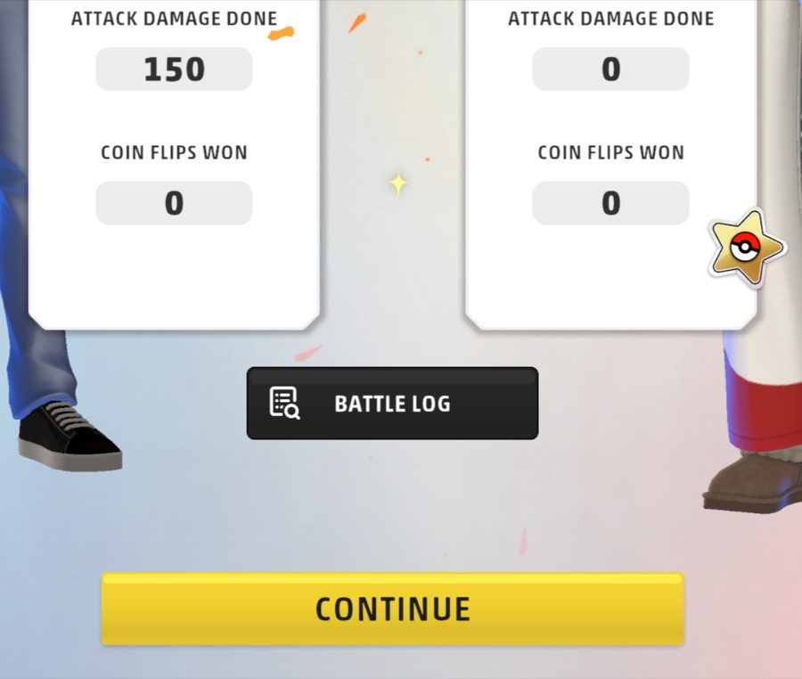
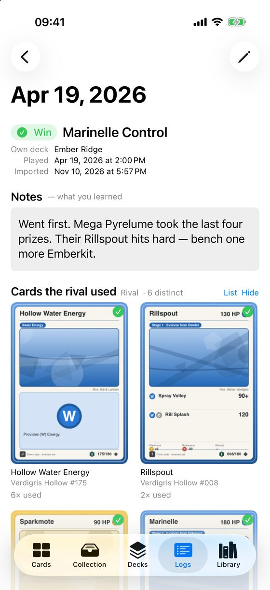
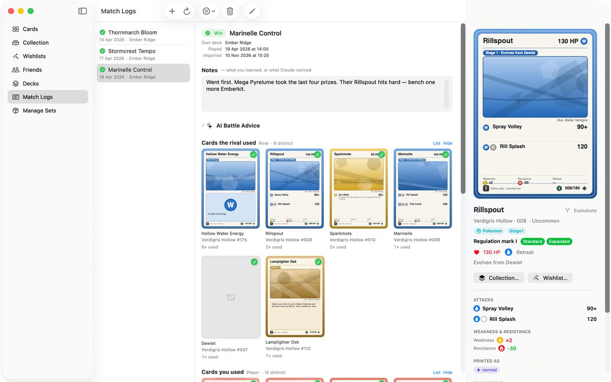

Match logs
Paste the log of a game you played in Pokémon TCG Live, and the app shows who won, which cards each side used, and a place for your own notes.
Where. iPhone: the Logs tab. iPad and Mac: Match Logs in the sidebar.
Import a log
- In Pokémon TCG Live, when a game ends, tap Battle Log on the results screen and copy the log.
- In Match Logs, tap Import Log….
- Paste the log into the field, or tap Choose File… if you saved it as a file.
- Tap Import.

Read it back

- The top shows the result, the date, your deck and the opponent's.
- Notes is yours: what you learned from the game.
- Cards the rival used and Cards you used list each card with how many times it came up. Switch between a grid and a list with List.
- Cards from sets you have not added appear without a picture. Add the set in Manage Sets.
Fix or add details
Tap Edit Details (the pencil) to set the Result, the deck you played, the opponent's type and your notes. Use the filter and Sort to find an old match.
Mac. The list, the match and the selected card sit side by side.
